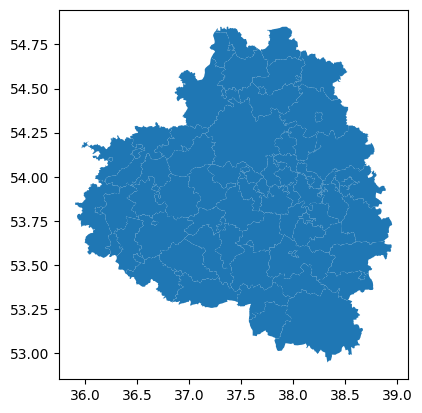
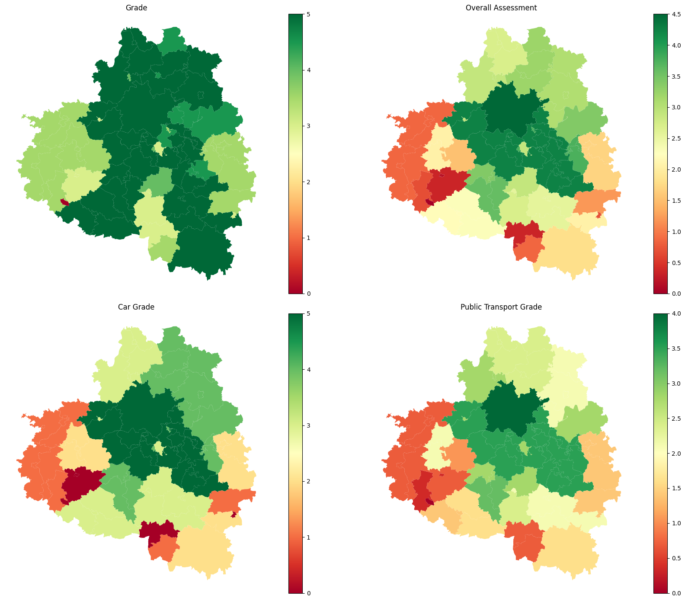

Territory grade and criteria
[1]:
import geopandas as gpd
import pandas as pd
import os
os.getcwd()
import pickle
Initialization
Specify the right local CRS for yout territory (make sure it is Projection CRS, not the Geographical CRS).
[2]:
local_crs = 32637 # Tula region crs
Initialize the territory
[3]:
municipalities_polygons = gpd.read_file("data/tula_region_municipalities.geojson")
municipalities_polygons.plot()
[3]:
<Axes: >

Territory grade (frame-based)
Use the results obtained from transport_frames.frame.get_frame() and transport_frames.frame.weight_roads()
[ ]:
with open("data/G_weighted_frame.pickle", "rb") as f:
weighted_frame = pickle.load(f)
Territory Grade
Grade is assigned to the territory based on its linear distance to federal and regional roads.
Road class legend - reg = 1 — federal - reg = 2 — regional
Condition |
Grade |
|---|---|
Priority federal node ( |
5.0 |
Federal node ( |
4.5 |
Priority regional node ( |
4.5 |
Regional node ( |
4.0 |
Priority regional node ( |
3.5 |
Regional node ( |
3.0 |
Regional node ( |
2.0 |
No nodes, but graph edges are within 5 km |
1.0 |
No known roads within 1 km |
0.0 |
Bonus - Railway station within 10 km: +0.5 (added to the base grade).
[5]:
from transport_frames.criteria import grade_territory
graded_territory= grade_territory(weighted_frame, municipalities_polygons)
graded_territory
[5]:
| name | geometry | grade | |
|---|---|---|---|
| 0 | Манаенское | POLYGON ((36.27046 53.67571, 36.27343 53.67505... | 3.5 |
| 1 | Астаповское | POLYGON ((36.47061 53.63576, 36.48947 53.63114... | 3.0 |
| 2 | Арсеньево | POLYGON ((36.63005 53.72754, 36.63174 53.72702... | 3.0 |
| 3 | Левобережное | POLYGON ((35.89856 53.85018, 35.90015 53.84679... | 3.5 |
| 4 | Правобережное | POLYGON ((36.1455 53.80533, 36.14561 53.80468,... | 3.5 |
| ... | ... | ... | ... |
| 79 | Яснополянское | POLYGON ((37.17494 54.04491, 37.1757 54.0431, ... | 5.0 |
| 80 | Ясногорск | POLYGON ((37.66036 54.50418, 37.67147 54.4978,... | 4.5 |
| 81 | Теляковское | POLYGON ((37.60388 54.56328, 37.60784 54.55777... | 5.0 |
| 82 | Ревякинское | POLYGON ((37.47214 54.48182, 37.47222 54.48006... | 5.0 |
| 83 | Иваньковское | POLYGON ((37.68687 54.71385, 37.69127 54.71262... | 4.5 |
84 rows × 3 columns
Transport Criteria
District polygons and settlement points are used for calculating quartile of settlement connectivity of the territory (aggregated by polygons).
[6]:
districts_polygons = gpd.read_file("data/tula_region_districts.geojson")
settlement_points = gpd.read_file("data/tula_region_towns.geojson")
Initialize the gdfs of railway stations, bus stops, fuel stations and aerodromes. The services should be presented as Points.
[7]:
railway_stations = gpd.read_file("data/tula_region_railway_stations.geojson")
bus_stops = gpd.read_file("data/tula_region_bus_stops.geojson")
local_aerodrome = gpd.read_file("data/tula_region_aerodrome.geojson")
[8]:
local_aerodrome["geometry"] = local_aerodrome.geometry.representative_point()
Criteria is calculated based on drive and public tranport connectivity, frame-based grade, distance to the services.
The Transport criterion combines: - the territory position relative to the transport framework; - the average travel connectivity from the territory to other territories.
Service Availability Weight (within 15 km)
Service |
Weight |
|---|---|
Bus stop |
0.35 |
Railway stop/station |
0.35 |
Port / pier / ferry crossing |
0.20 |
Airfield |
0.10 |
Rules: - If several service types are present, weights are summed. - If a service type is absent, its weight is 0. - If all service types are absent, total weight is W = 0.
Apply Quartile-Based Coefficients
First, determine the average transport connectivity quartile for all municipalities in the project area: - Q4: worst 25% - Q3: 75% to 50% - Q2: 50% to 25% - Q1: best 25%
Then use transport-framework score F and weight W:
|
Q4 Private |
Q4 Public |
Q3 Private |
Q3 Public |
Q2 Private |
Q2 Public |
Q1 Private |
Q1 Public |
|---|---|---|---|---|---|---|---|---|
5.0 |
2 |
|
3 |
|
4 |
|
5 |
|
4.5 |
2 |
|
3 |
|
4 |
|
5 |
|
4.0 |
1 |
|
2 |
|
3 |
|
4 |
|
3.5 |
1 |
|
2 |
|
3 |
|
4 |
|
3.0 |
0 |
|
1 |
|
3 |
|
3 |
|
2.5 |
0 |
|
1 |
|
2 |
|
3 |
|
2.0 |
0 |
|
1 |
|
2 |
|
2 |
|
1.5 |
0 |
|
0 |
|
1 |
|
2 |
|
1.0 |
0 |
|
0 |
|
1 |
|
1 |
|
0.0 |
0 |
|
0 |
|
0 |
|
1 |
|
Final Score
0 to 5.Connectivity data can be obtained using pre-calculated adjacency matrices or calculated automatically based on graphs.
Adjacency matrices for drive and PT graphs can be calculated using iduedu.get_adj_matrix_gdf_to_gdf()
Drive and intermodal graphs can be obtained using transport_frames.graph.get_graph() and transport_frames.graph.get_intermodal_graph()
[9]:
with open("data/G_drive.pickle", "rb") as f:
G_drive = pickle.load(f)
with open("data/G_inter.pickle", "rb") as f:
G_pt = pickle.load(f)
[10]:
from transport_frames.criteria import get_criteria
criteria_gdf = get_criteria(graded_terr = graded_territory,
towns = settlement_points,
polygons = districts_polygons,
drive_graph = G_drive,
PT_graph = G_pt,
r_stops = railway_stations,
b_stops = bus_stops,
ferry = None, # there aro no ferry ports in Tula region
aero = local_aerodrome,
adj_mx_drive = None,
adj_mx_PT = None,
local_crs = local_crs
)
criteria_gdf
Getting drive matrix
2026-04-05 00:05:02.449 | WARNING | Removing 197 nodes from 22 smaller strongly connected components. These are subgraphs where nodes are internally reachable but isolated from the rest. Retaining only the largest strongly connected component (31927 nodes).
Getting PT matrix
[10]:
| geometry | name | grade | weight | weight_r_stops | weight_b_stops | weight_ferry | weight_aero | car_access_quartile | public_access_quartile | car_grade | public_transport_grade | overall_assessment | |
|---|---|---|---|---|---|---|---|---|---|---|---|---|---|
| 0 | POLYGON ((36.27046 53.67571, 36.27343 53.67505... | Арсеньевский район | 3.5 | 0.35 | 0.00 | 0.35 | 0.0 | 0.0 | 4 | 4 | 1.0 | 0.35 | 0.675 |
| 1 | POLYGON ((36.47061 53.63576, 36.48947 53.63114... | Арсеньевский район | 3.0 | 0.70 | 0.35 | 0.35 | 0.0 | 0.0 | 4 | 4 | 0.0 | 0.70 | 0.350 |
| 2 | POLYGON ((36.63005 53.72754, 36.63174 53.72702... | Арсеньевский район | 3.0 | 0.35 | 0.00 | 0.35 | 0.0 | 0.0 | 4 | 4 | 0.0 | 0.35 | 0.175 |
| 3 | POLYGON ((35.89856 53.85018, 35.90015 53.84679... | Белевский район | 3.5 | 0.70 | 0.35 | 0.35 | 0.0 | 0.0 | 4 | 4 | 1.0 | 0.70 | 0.850 |
| 4 | POLYGON ((36.1455 53.80533, 36.14561 53.80468,... | Белевский район | 3.5 | 0.70 | 0.35 | 0.35 | 0.0 | 0.0 | 4 | 4 | 1.0 | 0.70 | 0.850 |
| ... | ... | ... | ... | ... | ... | ... | ... | ... | ... | ... | ... | ... | ... |
| 79 | POLYGON ((37.17494 54.04491, 37.1757 54.0431, ... | Щекинский район | 5.0 | 0.70 | 0.35 | 0.35 | 0.0 | 0.0 | 1 | 1 | 5.0 | 3.50 | 4.250 |
| 80 | POLYGON ((37.66036 54.50418, 37.67147 54.4978,... | Ясногорский район | 4.5 | 0.80 | 0.35 | 0.35 | 0.0 | 0.1 | 2 | 3 | 4.0 | 2.40 | 3.200 |
| 81 | POLYGON ((37.60388 54.56328, 37.60784 54.55777... | Ясногорский район | 5.0 | 0.80 | 0.35 | 0.35 | 0.0 | 0.1 | 2 | 3 | 4.0 | 2.40 | 3.200 |
| 82 | POLYGON ((37.47214 54.48182, 37.47222 54.48006... | Ясногорский район | 5.0 | 0.80 | 0.35 | 0.35 | 0.0 | 0.1 | 2 | 3 | 4.0 | 2.40 | 3.200 |
| 83 | POLYGON ((37.68687 54.71385, 37.69127 54.71262... | Ясногорский район | 4.5 | 0.80 | 0.35 | 0.35 | 0.0 | 0.1 | 2 | 3 | 4.0 | 2.40 | 3.200 |
84 rows × 13 columns
[11]:
import matplotlib.pyplot as plt
cols = ["grade", "overall_assessment", "car_grade", "public_transport_grade"]
titles = ["Grade", "Overall Assessment", "Car Grade", "Public Transport Grade"]
fig, axes = plt.subplots(2, 2, figsize=(18, 14))
axes = axes.ravel()
for ax, col, title in zip(axes, cols, titles):
plot_kwargs = dict(
column=col,
cmap="RdYlGn",
legend=True,
linewidth=0.2,
ax=ax,
)
if col == "grade":
plot_kwargs.update(vmin=0, vmax=5)
criteria_gdf.plot(**plot_kwargs)
ax.set_axis_off()
ax.set_title(title)
plt.tight_layout()
